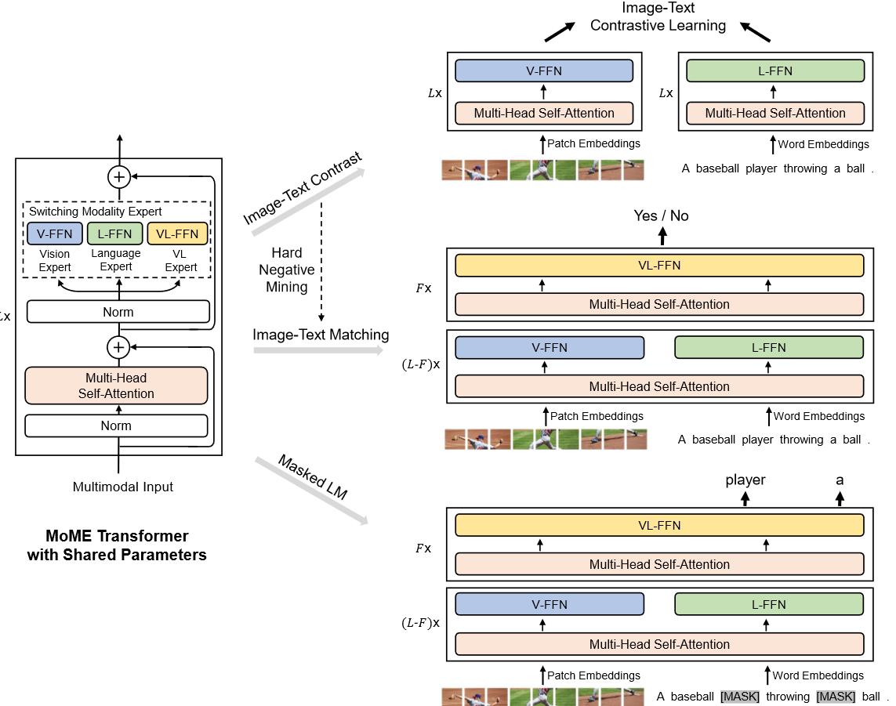
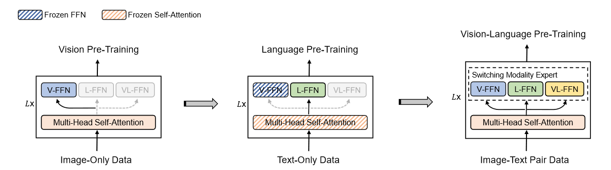
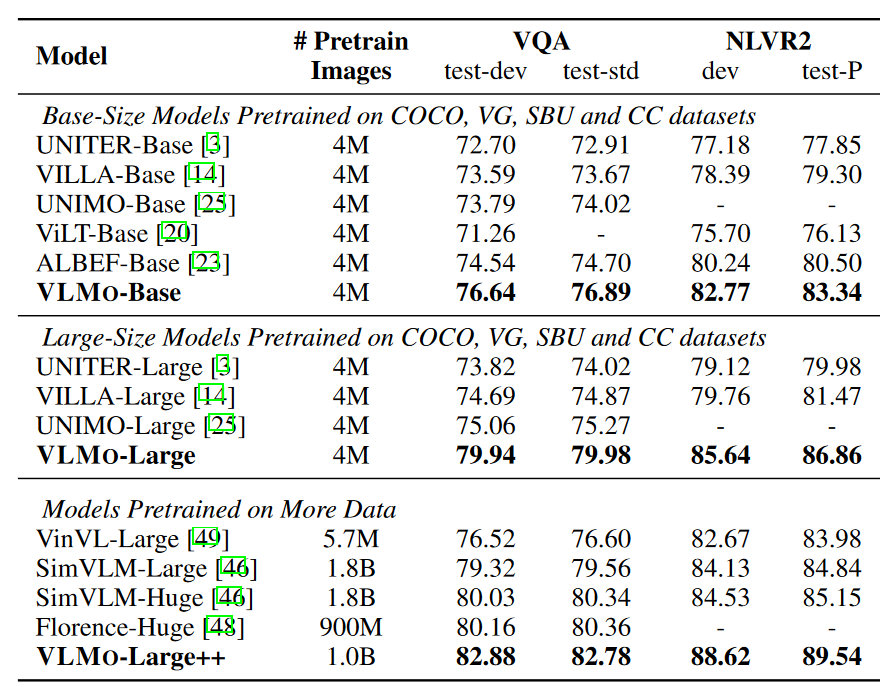
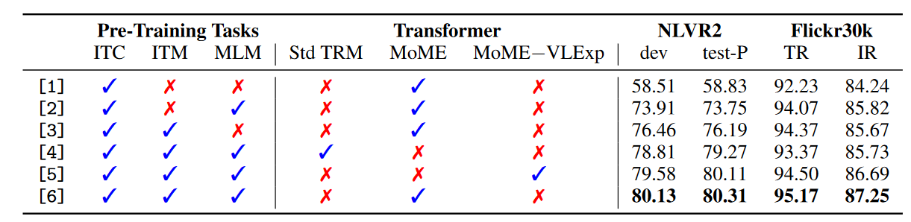
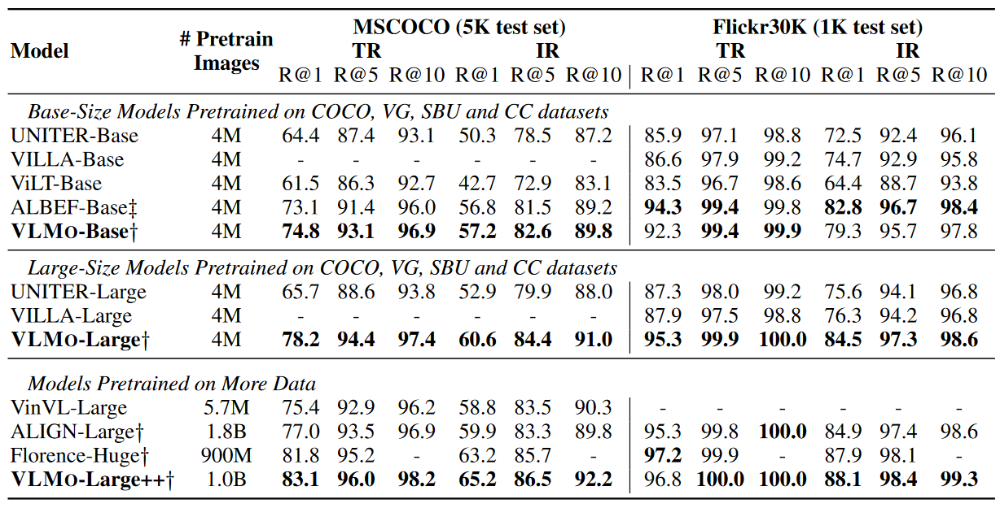

多模态系列(三)- VLMO
论文地址：VLMO: Unified Vision-Language Pre-Training with Mixture-of-Modality-Experts
论文代码：VLMO
转载自:[多模态系列论文–VLMO 详细解析-CSDN博客](https://blog.csdn.net/lansebingxuan/article/details/131721728)
多模态系列(三)- VLMO
1. 研究动机
现在多模态学习领域有两个主流的模型结构：
双塔结构:
图像有一个模型，文本有一个模型，双塔完全分开，互不干扰，模态之间的交互用非常简单的Cosine Similarity来完成，比如CLIP Align这种dual-encoder。
结构优点：对检索任务极其有效，因为它可以提前把特征都抽好，接下来直接算Similarity矩阵乘法就可以，极其适合大规模的图像文本的检索，非常具有商业价值。
结构缺点：只计算Cosine Similarity无法做多模态之间深度融合，难一些的任务性能差。
单塔结构:
Fusion Encoder的方式，先把图像和文本分开处理一下，但是当做模态交互的时候，用一个Transformer Encoder做模态之间的交互。
结构优点：这个结构弥补双塔模式的缺陷，在VR、VE、VQA任务上效果特别好。
结构缺点：当做检索任务的时候，因为只有一个模型，所以必须同时做推理，当图像文本对特别多，数据集特别大的时候，需要将所有all possible图像文本对全都要同时编码，然后计算Similarity Score，才能做检索，所以推理时间就会非常慢。
本文的研究动机：
-
结合上面两种结构的优点来设计模型网络，在做推理的时候想用dual-encoder就用dual-encoder，想用Fusion Encoder就用Fusion Encoder。在Feed Forward FC层，每个模态就会对应自己不同的Expert，就是视觉有视觉的Vision Expert，Language有Language的Expert，Multi-model有Multi-model对应的Expert，这样在训练的时候输入哪个模态的数据，就训练哪个模态的Expert。推理的时候能根据现在输入的数据决定使用什么模型结构。
-
由于多模态领域也有文本，作者希望也能实现NLP中数据越多效果越好的情况。尽管多模态的训练数据集不够多，但是在单模态里，就是视觉或者NLP里，可用的数据很多。基于这个研究动机，VLMo的作者提出了stagewise pre-training strategy，就是分阶段去训练，先把vision expert在视觉数据集这边训好，再把language expert在language的数据集上训好，这个时候模型本身的参数非常好的被初始化了，再到多模态的数据上做pre-training，效果就会好很多。

2. 贡献1 MOME模型
2.1 模型结构
VLMo论文的模型核心是一个transformer encoder的结构，但是它在每个transformer block里面做了一些改动，也就是他们提出的MoME transformer(mixture-of-modality-expert)。
标准的transformer block结构：一个标准的transformer block里先有一个Layer Norm，接下来是一个MSA multi-head self-attention，然后是Layer Norm，然后是一个FFN feed-forward network，最后有一个residual。
本文的transformer block结构：本文结构中layer norm、MSA、layer norm、residual connection这些都是一样的，唯一一个不一样的就是feed-forward network，它不是一个feed-forward network，而是针对不同的输入、不同的modality，有vision FFN、language FFN和vision language FFN，也就是switching modality expert，从而构建出MoME transformer block，也就是VLMo整个的模型结构。
注意：虽然的FFN层没有share weights，各自modality有各自的FFN层，但之前的self-attention层是share weights，也就是不论图像、文本还是图像文本信号，输入任何的token sequence，self-attention的model weights都是一样的，这个也是transformer架构的优势，或者说多模态学习接下来的趋势，目前有很多工作证明，同样的self-attention weights可以用来做不同的图像文本音频视频任务，不需要重新去训练自注意力参数。
2.2 损失函数
- Image Text Contrastive (ITC)
- Image Text Matching (ITM)：一个二分类任务
- Mask Language Modeling (MLM)：预测这些被mask掉的单词
本文从ALBEF里借鉴用这三个loss训练模型以及hard negative mining的思想。例如当计算ITC contrastive loss的时候，VLMo类似CLIP模型，图像端只有图像，输入ViT，FFN都用的Vision FFN，如果用Vision Transformer Base，就是12层的一个transformer，文本端就是文本的token单独输入language model，后面用的是language expert是一个12层的BERT base，当计算ITM或者mask language modeling 的时候，模型变成fusion encoder的形式，图像和文本的一起输入multi-head self-attention（这里的self-attention与之前的self-attention和后面的self-attention都是share weights，都是一样的，不论哪个modality，自注意力的参数都不变，都是共享的）。
在前面的L-F的transformer block里，模型对视觉和language信号分别做训练，也就是分别用Vision Expert（VE）和Language Expert(LE)，只有在最后的F层，才用Vision Language Expert训练。例如，如果用的是transformer base模型，前十层做VE和LE，后面F就是2，也就是后面只有两层transformer block做模态之间的融合。
2.3 结构优点
VLMo的优点是灵活，训练的时候可以通过各种modality选择训练哪个modality expert；推理的时候可以选择使用哪些模型参数。如果做检索任务，就像CLIP一样就用视觉和文本两个模型就可以，如果做Vision Language分类任务VR、VE、VQA，就用下面的Fusion Encoder模式。
2.4 结构缺点
由于有的时候要做mask，有的时候不用maks，灵活的代价是VLMo里至少做了两次甚至三次的前向过程，VLMo的base模型在4 million的setting下训练，用64张V100的卡需要训练两天，训练量与ViLT同级别，比ALBEF慢。
3. 贡献2 分阶段的训练策略
因为作者希望利用Unimodality里大量的图片文本去做预训练进而得到更好的模型初始化，所以先做Vision Pre-training，然后做Language Pre-training，最后做Vision Language Pre-training。
具体地，做Vision Pre-training的时候，是Unsupervised，用了他们自己的BEIT中的Mask Image Modeling，做Language Modeling的时候，使用Mask Language Modeling，Vision Language Pre-training用的上面三个目标函数。

图中蓝色的虚线代表是Frozen FFN，橘黄色的虚线代表Frozen Self-attention。
- 第一阶段做Vision Pre-training的时候，因为刚训练完，不需要freeze，所有参数随机初始化，所以12层的Transformer Block，包括前面自注意力和后面的Vision Expert都打开训练。
- 第二阶段做文本预训练的时候，Vision Expert被冻住，因为训练文本数据不需要训练Vision Expert，所以Vision Expert的FFN层参数就固定下来了，该阶段去训练Language Expert，并且Self-Attention也冻住了，因此在视觉数据上训练好一个模型，在视觉Token Sequence上训练好一个自注意力模型，可以直接拿来对文本数据进行建模，不需要fine-tune。但这个过程反过来不行，就是先在Language上去训练然后再在Vision上冻住去做结果不太好，但是先用Vision训练然后再在Text上直接去用Self-Attention，很多工作都证明是有效的。
- 第三阶段做多模态，所有训练参数都打开训练，包括Self-Attention，后面三个Expert都打开做fine-tune。
4. 实验结果
1.多模态任务

表1里作者对比VQA和VR两个数据集上的表现。因为VLMo主要做的是模型结构上的改进，所以VLMo既做了Base也做Large，但是它的预训练数据集都是4M、4M（但是ALBEF不一样，ALBEF是想克服训练数据集的Noisiness，所有只做Base，但是它做了4M和14M数据集）。VLMo非常有效，在4M数据集上的表现非常好，比ALBEF的全线都高两到三个点。如果用更大的模型或者在更大的数据集上做预训练完之后性能会进一步提升
2.消融实验:消融实验证明分阶段的预训练策略很有效。

3.单模态任务:因为模型很灵活，在单独的视觉数据集上也取得了很好的效果。做图文检索的时候也取得了很好的效果和推理时间。如下表2所示。

5. VLMo后续工作
- 将模型变大：作者在BEIT v3中实现，用的ViT-Giant 有1.9 billion的参数。
- 做更多下游的Vision-Language Task：
比如Image Captioning等，作者在VL-BEIT、BEIT v3里都做了尝试。 - 验证多模态任务对单模态任务是否有提升。本文验证了Unimodality能够帮助Multimodality。反过来，Multimodality也有可能帮助Unimodality，作者在BEIT v3中将文本和图像的各数据集都进行验证，效果都很好。
- 模态和任务不限于Vision Language，对更多的模态和更多的应用场景应该都适用。作者团队在Speech方向有WAVLM，在Structured Knowledge方向有Layout LM v1、v2、v3。还有支持General Purpose的多模态学习，就是统一用文本当做一个Interface，所有的任务都可以通过一个Prompt生成文本结构去实现，这方面作者团队有MetaLM的工作。
- BEIT系列工作的发展历程：
1）BEIT V1：2021年6月份发布
2）VLMo：2021年11月份发布
3）VL-BEIT：22年6月份发布，作者团队同时用Mask Modeling做Vision和 Language。
4）BEIT V2：22年8月份发布，BEIT V2是BEIT V1的一个升级版，它还是做的视觉的Dataset。
5）BEIT V3：22年8月份发布，BEIT V3就是之前所有工作的一个集大成版本，一个多模态的网络同时做单模态和多模态任务。